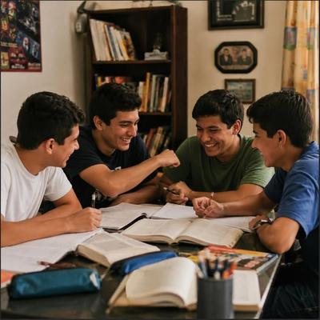

Hay recuerdos que permanecen suspendidos en algún rincón de la memoria, como antiguas fotografías que el tiempo amarillenta, pero no logra borrar. Cuando pienso en mi adolescencia, inevitablemente vuelvo a aquellos años de secundaria en los que cuatro amigos compartíamos mucho más que cuadernos, libros y exámenes. Compartíamos una etapa irrepetible de la vida. Nos reuníamos para estudiar en casa de uno o del otro. Nuestros padres se conocían, nuestras familias se saludaban, y pasábamos largas horas entre estudio, bromas, conversaciones y sueños sobre el futuro. Éramos cuatro muchachos intentando abrirnos camino en el mundo.


Con el tiempo, mis tres amigos decidieron estudiar medicina. Yo en cambio, tomé un rumbo distinto, y opté por la ingeniería. Sin embargo, aquella diferencia de vocaciones nunca afectó nuestra amistad, y seguimos juntos hasta graduarnos de secundaria. Después llegó la universidad. Y luego llegó la vida. En aquella época no existían teléfonos celulares, redes sociales ni mensajería instantánea. Cuando una amistad se alejaba, simplemente desaparecía en el horizonte. No había perfiles que consultar ni fotografías que observar. Cada quien seguía su camino, y el contacto se perdía en el silencio de los años. Y los años pasaron… muchos años. Más de cuatro décadas. Hasta que un día, inesperadamente, me encontré con uno de aquellos viejos amigos. Lo llamaré Antonio.
Fue una de esas sorpresas que producen una extraña mezcla de alegría y nostalgia. Frente a mí ya no estaba el adolescente que había compartido tantas tardes de estudio, sino un hombre marcado por el tiempo, como yo mismo. Conversamos brevemente, recordamos algunas anécdotas y terminamos intercambiando números telefónicos. Sin embargo, las circunstancias habían cambiado mucho desde nuestros años juveniles. Para entonces ya existían las redes sociales, y quienes me conocían, sabían que siempre había publicado contenido relacionado con el ateísmo, el pensamiento crítico, la ciencia y el escepticismo. Pero además, había publicado algunos libros con temática atea. Y como suele ocurrir, muchas amistades de la infancia, antiguos compañeros, e incluso algunos familiares, se habían alejado de mí al enterarse de mis ideas.
Es una situación que lamentable que se ha repetido demasiadas veces. Lo curioso es que los ateos rara vez actuamos de la misma forma. Cuando nos reencontramos con viejos amigos creyentes, normalmente nos interesa saber cómo están, qué ha sido de sus vidas, cómo les ha tratado el tiempo, cuáles han sido sus alegrías y sus dificultades. No sentimos ninguna necesidad de aprovechar cada conversación como una campaña de reclutamiento ideológico. Pero por desgracia, nosotros rara vez recibimos el mismo trato.
Resulta que algún tiempo después de aquel reencuentro con mi amigo, atravesaba yo una situación particularmente difícil: tenía problemas económicos y de salud, y Antonio se enteró de ello a través de amigos en común. Después de una prestigiosa carrera como médico traumatólogo, él se había vuelto un hombre rico. Ya para entonces estaba retirado. Cuando de pronto, un día recibí un mensaje suyo por WhatsApp. Confieso que sentí cierta emoción. Pensé que alguien quizá le había comentado cómo me encontraba, y tal vez quería conversar. Quizás deseaba retomar, aunque fuera brevemente, una amistad interrumpida durante más de cuarenta años. Pero no. Al abrir el mensaje encontré un largo texto religioso. Ningún saludo. Ninguna referencia a mi situación. Ninguna muestra de interés personal. Solamente propaganda religiosa.
No respondí. Pasaron algunos días, y entonces llegó otro mensaje. También religioso. También impersonal. También completamente desconectado de cualquier conversación humana. Aquello me produjo una profunda desilusión, no porque alguien tenga creencias religiosas, cada persona es libre de creer lo que considere conveniente. Lo que me resultó triste fue comprobar que, después de más de cuarenta años sin vernos, parecía no existir interés alguno por la persona que estaba al otro lado de la pantalla. El viejo amigo de adolescencia había desaparecido detrás de una misión evangelizadora. Así que finalmente decidí responderle. Le escribí:
«Hola Antonio. Te agradezco la buena voluntad con que me envías tus mensajes religiosos. No los estoy leyendo, porque este tipo de publicaciones contiene siempre las mismas ideas, que yo conozco de sobra. Yo me leí los cuatro evangelios de principio a fin, los analicé y los comparé, y escribí un libro con mis investigaciones sobre el tema. Está publicado en Amazon. Sé que no lo leerás, porque tus creencias te lo impiden. Respeto tu libertad de creer en cualquier cosa que te haga sentir bien, pero yo prefiero la ciencia, la razón y el pensamiento crítico. Así es este mundo. No todos interpretamos las cosas del mismo modo. Lamento que después de tanto tiempo no podamos conversar sobre otros temas.»
Ya han pasado otros tantos años de esto, y nunca recibí respuesta. Y para ser sincero, tampoco la esperaba. Pero aquel episodio me hizo reflexionar sobre algo que he observado tantas veces a lo largo de la vida. Muchos creyentes son incapaces de concebir una relación humana que no incluya el intento de modificar las creencias del otro. Como si la amistad, la empatía o el afecto quedaran relegados a un segundo plano, frente a la necesidad de predicar. Y lo lamentable es que esos encuentros son irrepetibles. La vida nos concede muy pocas oportunidades para reencontrarnos con quienes compartimos nuestra juventud. Son momentos tan valiosos, precisamente porque el tiempo es limitado, y porque la memoria está formada de hechos y personas, no de doctrinas.
Obviamente, yo habría preferido hablar de nuestras familias, de nuestras experiencias, de nuestros sueños cumplidos o frustrados. Habría querido recordar aquellas largas horas de estudio, aquella ansiedad por los exámenes… reírnos de nuestras antiguas ocurrencias, y descubrir qué había sido de aquellos muchachos que una vez creyeron tener toda la vida por delante. Pero la conversación nunca llegó a existir. En lugar de un reencuentro entre dos viejos amigos, terminó produciéndose algo mucho más triste: un monólogo religioso enviado a una persona que ni siquiera había sido escuchada. Y quizás eso fue lo que más me decepcionó.
Después de más de cuarenta años, el valor del reencuentro no estaba en las ideas religiosas o filosóficas de cada quién, sino en la posibilidad de recuperar, aunque fuera por unos instantes, un fragmento de una etapa irrepetible de la vida. Por eso la decepción resultó inevitable: no se trataba simplemente de recibir mensajes religiosos, sino de sentir que la persona concreta —el antiguo compañero de estudios, el amigo de adolescencia— había quedado relegada a un segundo plano frente al impulso de predicar.
Curiosamente, cuando un creyente descubre que alguien es ateo, suele interpretar la situación como un problema que debe corregir. Los ateos en cambio, estamos acostumbrados a convivir con familiares, amigos y colegas religiosos, sin sentir por un instante la necesidad de convencerlos de abandonar sus creencias. Y esa asimetría produce frustración, especialmente cuando afecta relaciones que antes estaban basadas en vínculos mucho más personales.
En todo caso, hay algo que va más allá de cualquier crítica a la religión: la melancolía de descubrir que algunas amistades sobreviven en nuestros recuerdos mucho mejor que en la realidad. A veces conservamos durante décadas la imagen de quienes fueron importantes para nosotros, pero cuando finalmente volvemos a encontrarlos, descubrimos que el tiempo no sólo nos ha cambiado, sino también la naturaleza de aquella relación que una vez existió.
[Godless Freeman]
[Iván Gonzáles Mairena (n. en 1951) es un ingeniero civil con estudios de administración de empresas y ciencias de la comunicación, y escritor hondureño ateo. Creador de contenido publicado en las redes sociales, en defensa del ateísmo, laicismo y el pensamiento crítico. Ha publicado las siguientes obras: «Análisis crítico de los evangelios» (19 de septiembre de 2015), «Viviendo sin Dios. Fundamentos de ateología» (13 de diciembre de 2015), «Los libros de autoayuda, ¿Te dicen la verdad?» (1 de julio de 2017) con su versión en inglés «Do self-help books, tell you the truth?» (22 de Julio de 2017), «Grandes Preguntas, Grandes Mentiras» (15 de diciembre de 2017), y «Jesús Detrás del Mito» (23 de enero de 2018)]
Comentarios
Comments powered by Disqus